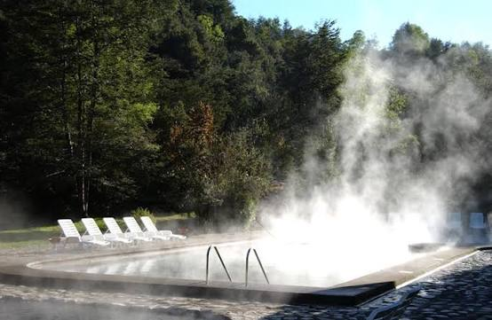

Termas de Huife

Las Termas de Huife se encuentran a orillas del río Liucura, a pocos minutos de Pucón. Sus piscinas de piedra están rodeadas de bosque nativo y ofrecen aguas termales que superan los 40 grados, ideales para descansar después de un día de aventura.
Ubicación: Pucón, Chile
Duración: 2 horas
Volver